来源：知识星球「南半球聊财经」星主 Jason 不跪当日发帖 当日发帖数量：15 帖 帖子时间为浏览器本地时区（美西）。本文全部为中文深度解读，配套原图保存在
jason_images/2026-06-22/。
今日要点速览
今天 Jason 集中转发了多家投行/媒体的研究，可以串成五条主线：
- 美联储转鹰——美银（BofA）把 2026 年预期从"按兵不动"改成"9/10/12 月各加息一次"，核心逻辑是通胀粘性（核心 PCE 5 月或达 3.5%）。配合"投资时钟"框架，他在提示市场正从"繁荣"滑向"滞胀"的尾部风险。
- 人口与生育的结构性拐点——全球 15-40 岁劳动主力人口在 2025 年前后见顶，老龄人口持续攀升；中韩生育率出现"逆转"，韩国 2025 年出生率回升、中国至少 11 个省已低于韩国。这是 Jason 长期关注的"慢变量"。
- 中国金融体系的内压——银行净息差从 2.1% 压到 1.4%、被迫暂停长期定存、家庭贷款增速归零、办公楼挂牌价持续阴跌、家电内需疲弱。一组数据共同指向"资产荒 + 需求弱"。
- 地缘博弈——美国把 10 家稀土相关企业列入出口管制（把供应链"武器化"），同时给伊朗发 60 天石油销售许可证，谈判筹码一边加码一边铺台阶。
- 市场与情绪——中金用"拥挤度"框架判断当前科技高拥挤属"好拥挤"；私募半夏因重仓地产链净值一周暴跌 15%，成为风险案例。
整体基调：海外（美国）通胀+加息隐忧，国内（中国）需求+通缩隐忧，人口是横在两者背后的长期变量。
帖子逐条解读
帖 1 ｜ 15:53 ｜ 美银：维持 2026 年加息三次预期 #金融
帖子原文
BOFA：我们维持预计今年美联储将在 9 月、10 月和 12 月加息三次，每次 25 个基点。这将使政策利率达到 4.25% 至 4.5%。今年就业增长的回升表明美联储担心的劳动力下行风险已经消散。与此同时，美联储的通胀问题明显恶化。核心 PCE 可能在 5 月份达到 3.5%，比去年同期高出近 70 个基点。
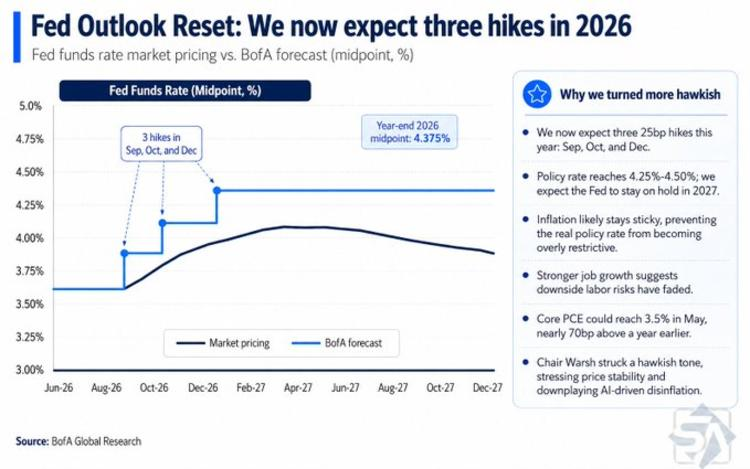
一句话核心：美银认为美联储今年不但不会降息，反而要加息三次，因为通胀又抬头了。
背景与关键数据
- 政策利率（Fed Funds Rate）：美联储调控经济的"总闸门"。利率越高，借钱越贵，越能压住通胀，但也压制经济。
- 25 个基点（bp）：1 个基点 = 0.01%，25bp = 0.25%。加息三次 = 升 0.75%，把利率推到 4.25%–4.5%。
- 核心 PCE：美联储最看重的通胀指标（剔除波动大的食品和能源）。目标是 2%。这里说 5 月可能到 3.5%，比一年前高出近 0.7 个百分点，说明通胀不降反升。
图片解读：图为美银的"Fed Outlook Reset"。黑线是市场隐含的利率路径，蓝色阶梯线是美银预测——在 9、10、12 月各跳一档，到 2026 年底中值 4.375%。右侧列出转鹰理由：通胀粘性、就业走强使"劳动力下行风险"消退、（图中提到的）美联储主席 Warsh 立场偏鹰、并淡化"AI 带来的通缩"。注意黑线（市场）明显低于蓝线（美银），意味着美银比市场更鹰，认为市场低估了加息风险。
为什么重要：如果美银对，美元利率会更高更久（higher for longer），对全球资产是利空——高利率压制股市估值、抬高新兴市场融资成本、利好美元。这条与帖 4（投资时钟）是同一套逻辑的不同表达。
延伸知识：通胀为什么"粘"？经济学里有"工资—物价螺旋"——物价涨→工人要求加薪→企业成本升→再涨价。一旦形成惯性，央行就很难只靠嘴(预期管理)压下去，必须用真实加息。1970 年代美国就吃过这个亏，最后靠沃尔克把利率加到 20% 才驯服通胀。
帖 2 ｜ 15:47 ｜ Westpac：从澳新利差看新西兰元疲软 #金融
帖子原文
Westpac：从澳新利差角度解释为什么新西兰元近期疲软
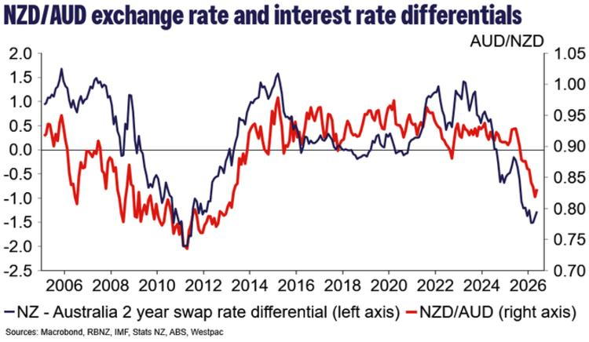
一句话核心：新西兰元最近走弱，根子在"新西兰和澳大利亚的利率差"收窄甚至反转。
背景与关键数据
- 利差（interest rate differential）：两国利率之差。钱会往利率高的地方流——哪国利率高，哪国货币就更受追捧、更强。
- 图里用的是 2 年期掉期利率差（NZ 减 澳），代表中期利率预期之差。
图片解读：蓝线（左轴）是"新西兰−澳大利亚 2 年掉期利差"，红线（右轴）是 NZD/AUD 汇率（新西兰元兑澳元）。可以清楚看到两条线高度同步：2024–2026 年蓝线从正值一路跌到约 −1.5（即新西兰利率反而比澳洲低了），红线（汇率）也同步跌到约 0.80 的低位。逻辑链是：新西兰相对澳洲降息更猛 → 持有新西兰元的"利息回报"变差 → 资金流出 → 新西兰元贬值。
为什么重要：这是理解汇率最基础也最实用的框架——利差驱动汇率。对做跨境资产、外贸、或关注澳新经济的人，看懂这张图就能预判货币方向：盯住两国央行谁更鸽。
延伸知识：这背后是"利率平价理论"（Interest Rate Parity）。简化版：如果一国利率更高，理论上它的货币未来应该贬值以抵消利差，但短期里"追逐利差"的套息交易（carry trade）会先把高息货币买强。新西兰元、澳元正是全球套息交易的常客货币。
帖 3 ｜ 15:45 ｜ 全球人口结构的拐点 #人口
帖子原文
CH：根据联合国模型，如果不包括非洲，全球人口结构正在经历蜕变，15-40 岁群体拐点。全球化对利润的贡献需要评估。
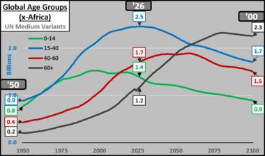
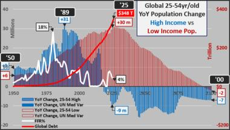
一句话核心：除非洲外，全球"年轻劳动力"正在见顶回落，这会从根上改变经济增长和企业利润。
图片解读
- 图一（全球年龄组，不含非洲，1950–2100）：四条线分别是 0-14 岁（绿）、15-40 岁（蓝）、40-60 岁（红）、60+（灰）。最关键的蓝线（15-40 岁主力消费/劳动人群）在 2025 年前后见顶约 25 亿，之后一路下滑到 2100 年的 17 亿；绿线（少儿）早已见顶下行；而灰线（60 岁以上）持续攀升，到 2100 年达 23 亿，反超所有其他年龄组。一句话：全球（除非洲）正在加速老去。
- 图二（25-54 岁高收入 vs 低收入人口的同比变化 + 全球债务 + 美联储利率）：蓝/粉柱子是高收入、低收入国家核心劳动人口的逐年增量，红线是全球债务（右轴，标注 2025 年 $348 万亿），白线是美联储利率。可以看到核心劳动人口增量在 1989 年见顶（+31m），如今降到很低、未来转负（图中 −9m），而全球债务却在指数级飙升。
为什么重要：人口是经济最慢但最确定的变量。劳动力收缩意味着——潜在增长下降、储蓄/投资格局改变、养老金和医保压力剧增。Jason 那句"全球化对利润的贡献需要评估"是点睛：过去 30 年企业高利润很大程度靠"全球化+人口红利"（廉价劳动力、扩张的消费市场），这个红利正在反转，未来企业利润率的可持续性要打问号。
延伸知识：这就是"人口红利→人口负债"的转换。日本是先行案例：1990 年代劳动人口见顶后，陷入"低增长、低通胀、低利率"长期停滞（资产负债表衰退）。如今很多发达国家和中国都在走这条路，而印度、非洲则还在红利期——这也是资本长期布局的方向之一。
帖 4 ｜ 15:37 ｜ 美银投资时钟：繁荣还是滞胀？ #金融
帖子原文
BOFA：美银投资时钟将经济划分为四个阶段：复苏、繁荣、滞胀、衰退。每个阶段都对应着利率和企业盈利 EPS 的不同方向。随着经济周期在这些阶段之间顺时针或逆时针移动，资金通常会在股票、大宗商品、现金和债券间轮动。目前，我们认为美国正处在繁荣阶段，但存在通过"熊市扁平化"转向滞胀阶段的风险，因为在通胀担忧之下，2 年期与 10 年期美债收益率曲线明显压缩。我们认为，只有油价大幅下跌，足以抵消 AI 驱动的财富效应螺旋，并把 CPI 拉回 3% 以下，才能阻止这种转变，让经济继续停留在繁荣阶段，而不是滑向滞胀。
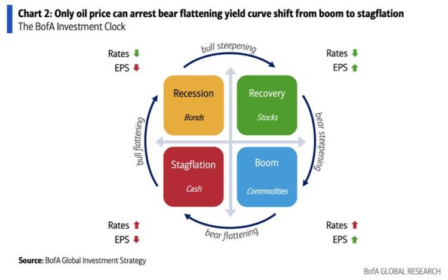
一句话核心：用一张"时钟图"判断现在处于经济哪个季节、该配什么资产；美国正站在"繁荣"与"滞胀"的分界线上。
图片解读：这是经典的 美银投资时钟（Investment Clock），四个象限：
| 象限 | 阶段 | 利率/EPS | 最优资产 |
|---|---|---|---|
| 左上（橙） | 衰退 Recession | 利率↓ EPS↓ | 债券 Bonds |
| 右上（绿） | 复苏 Recovery | 利率↓ EPS↑ | 股票 Stocks |
| 右下（蓝） | 繁荣 Boom | 利率↑ EPS↑ | 大宗商品 Commodities |
| 左下（红） | 滞胀 Stagflation | 利率↑ EPS↓ | 现金 Cash |
四周的箭头是收益率曲线形态（bull/bear、steepening/flattening）。美银认为现在在"繁荣"（右下，配商品），但正沿着底部"熊市扁平化（bear flattening）"向左下"滞胀"滑动——标题直接写"只有油价能阻止这一转变"。
为什么重要：从"繁荣"到"滞胀"是资产配置最难受的切换——股票和债券可能同时受伤，现金反而成王。判断信号是"2 年与 10 年美债收益率曲线压缩"（短端利率涨得比长端快，因为市场预期央行为压通胀而加息）。
延伸知识：什么叫"收益率曲线扁平化"？正常时长期债券利率 > 短期（曲线向上倾斜）。当短端被加息推高、长端因增长担忧压低，两者靠拢就叫"扁平化"，进一步反转（短>长）就是"倒挂"，历史上常被视为衰退前兆。把曲线形态和"时钟"叠起来看，是宏观择时的进阶工具。
帖 5 ｜ 15:29 ｜ 欧央行：货币谈判得带上中国 #金融
帖子原文
bloomberg：欧洲央行行长谈广场协议现在不合适，但贸易失衡谈判得包括中国。欧盟贸易负责人将于下周一与中国同行会面，尽管欧盟内部想法存在分歧。
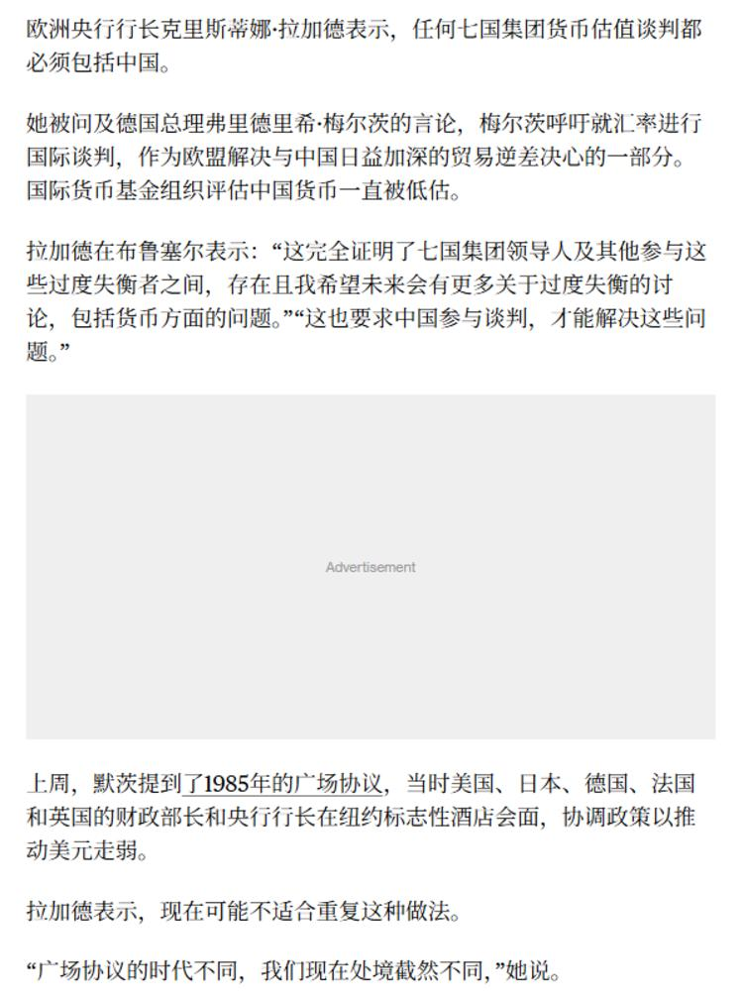
一句话核心：欧央行行长（拉加德）说，要解决贸易失衡得让中国上谈判桌，但不赞成重演 1985 年"广场协议"那种强行让美元贬值的做法。
图片解读：文字截图要点——拉加德称任何 G7 货币估值谈判都"必须包括中国"；IMF 评估人民币"一直被低估"；这是回应德国总理默茨呼吁就汇率进行国际谈判。但她强调"广场协议的时代不同，我们现在处境截然不同"，暗示不会简单复制当年的协同干预。
背景
- 广场协议（Plaza Accord, 1985）：美、日、德、法、英在纽约广场酒店达成协议，联合干预让美元贬值（主要是逼日元、马克升值）。结果日元大幅升值，被普遍认为是日本后来资产泡沫与"失去的十年"的诱因之一。
为什么重要：这透露出一个信号——西方开始把"汇率/货币"重新拉进贸易博弈，且明确指向中国。如果未来真有"针对人民币的国际施压"，会牵动出口、外储、资本流动。但拉加德的措辞又很克制，说明短期内不会有"新广场协议"。
延伸知识：货币被"低估"为什么是贸易争端焦点？本币越便宜，出口商品在国外越便宜、越好卖，相当于变相补贴出口、扩大顺差。所以顺差国常被指责"操纵汇率"。理解这点就能看懂中美欧贸易摩擦里反复出现的"汇率牌"。
帖 6 ｜ 15:23 ｜ 稀土供应链被"武器化" #（无标签）
帖子原文
zerohedge：……周一将 10 家美国稀土企业纳入出口管制名单，值得注意的是，MP Materials 和 USA Rare Earth 等关键稀土企业的加入，凸显了……正在将其在全球磁铁和稀土供应链垄断地位武器化的意愿，也回应之前五角大楼对……科技公司的限制。双方可能在 9 月会面前继续增加谈判筹码。
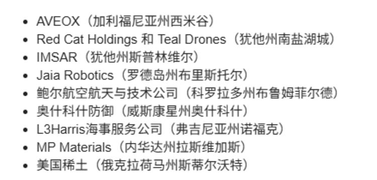
一句话核心：稀土被当成谈判武器——把对方关键的稀土/磁铁企业列入出口管制，互相加筹码。
图片解读：图为被列入管制名单的企业清单，包括 AVEOX、Red Cat Holdings 和 Teal Drones（无人机）、IMSAR、Jaia Robotics、鲍尔航空航天与技术、奥什科什防御、L3Harris 海事服务、MP Materials、美国稀土（USA Rare Earth） 等——可以看到名单里既有军工/无人机企业，也有最核心的两家稀土生产商。
背景与关键数据
- 稀土：17 种金属元素，是电动车电机、风电、导弹、雷达、手机等不可或缺的磁体原料。中国在开采尤其是精炼环节占全球绝对主导（精炼约 9 成）。
- 出口管制"武器化"：把供应链上的卡位优势当成地缘工具——你限制我科技，我就限制你拿稀土/磁铁。
为什么重要：稀土是少数中国掌握"定价权/卡脖子"能力的领域。一旦升级，会冲击全球军工、新能源、电子产业链，相关企业（如 MP Materials）股价波动会很大。文中"9 月会面前继续增加筹码"说明这是谈判前的施压动作，短期是博弈、不是脱钩。
延伸知识：这属于"经济胁迫/供应链地缘政治"。各国都在搞"去风险（de-risking）"——关键矿产、芯片、医药原料都要求"自主可控"或"友岸外包"。稀土、芯片、能源是三大主战场。
帖 7 ｜ 15:18 ｜ 自制图表：青年失业率比去年更差 #自制图表
帖子原文
毫无意外，5 月份青年失业率继续高于去年同期
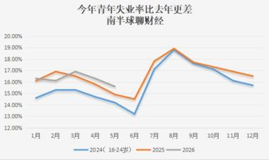
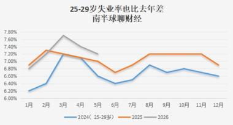
一句话核心：Jason 自己画的图显示——2026 年青年失业率，前 5 个月每个月都比 2024、2025 年同期更高。
图片解读
- 图一（16-24 岁失业率）：三条线 2024（蓝）、2025（橙）、2026（灰）。灰线（2026）只有 1–5 月数据，但明显压在橙线和蓝线上方，5 月约 15.5%，全程高于前两年同期。
- 图二（25-29 岁失业率）：同样三年对比，2026（灰）在 1–5 月也持续高于前两年，3 月一度冲到约 7.5%。说明失业压力不只在最年轻群体，已经蔓延到"25-29 岁"这个本应是就业骨干的年龄段。
为什么重要：青年失业率是观察经济景气和社会压力的高敏感指标。"逐年走高"说明就业市场在结构性恶化，而不是季节性波动。年轻人收入预期差→消费意愿弱→进一步压制内需，和后面几帖（家电弱、家庭贷款零增长）形成闭环。
延伸知识：这是 Jason 标志性的 #自制图表——用官方数据（统计局）自己复算、画图，避免被"口径调整/数据美化"误导。在评论区他也回复说数据来自"统计局网站"。养成"看原始数据、自己画趋势"的习惯，是建立独立判断最值钱的能力。
帖 8 ｜ 15:16 ｜ 美国给伊朗 60 天石油销售许可 #金融
帖子原文
zerohedge：美国颁发了一份为期 60 天的许可证，允许伊朗在国际市场上销售石油，这为德黑兰提供了经济救命稻草，两国继续就永久和平谈判。万斯表示伊朗已同意允许核检查员重返该国，但伊朗官员对此提出质疑。美伊同意成立一个"高级别委员会"，监督核问题和制裁的谈判和工作组，并成立一个"冲突处理小组"，帮助确保黎巴嫩军事行动结束。
（本帖含 6 张新闻截图，均为 zerohedge 对美伊谈判的英文报道原文，保存在 jason_images/2026-06-22/post8_img1.jpg ~ post8_img6.jpg。）
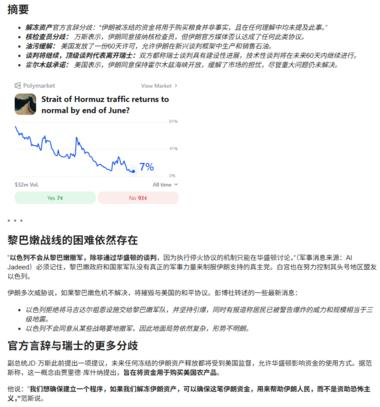
一句话核心：美国对伊朗放松石油出口制裁（先给 60 天），换取核检查和地区降温，是缓和信号。
背景与关键数据
- 石油出口许可证：美国对伊朗长期制裁，禁止其在国际市场卖石油。临时许可=暂时松绑，让伊朗能换回急需的外汇（"经济救命稻草"）。
- 核检查员重返：指国际原子能机构（IAEA）的核查，是判断伊朗核活动是否受控的关键。
为什么重要：这是对帖 4 那条逻辑的"对冲变量"——美银说"只有油价大跌才能阻止滞胀"。伊朗石油重回市场 = 全球原油供给增加 = 油价有下行压力，理论上利好"压通胀"。所以中东缓和不仅是地缘新闻，更是直接影响油价→通胀→美联储路径的宏观链条。
延伸知识：油价是连接"地缘政治"和"全球通胀"的总枢纽。供给端（OPEC+减产、制裁、战争）和需求端（全球增长）共同决定油价，而油价又直接进 CPI。这就是为什么宏观交易员都盯着中东——一条石油消息能同时撬动通胀预期、债券利率和股市。
帖 9 ｜ 15:10 ｜ 中韩生育率"逆转" #人口
帖子原文
何亚福：根据韩国统计厅发布的数据，2025 年韩国的出生率为 5.0‰。根据国家统计局数据，2025 年中国出生率为 5.63‰。其中，出生率低于 5.0‰ 的省份如下：河北 4.89‰、安徽 4.83‰、湖南 4.83‰、重庆 4.64‰、上海 4.31‰、内蒙古 4.28‰、湖北 4.26‰、天津 4.25‰、江苏 4.20‰、辽宁 3.40‰、吉林 3.08‰。可见，2025 年至少有 11 个省份的出生率低于韩国。此外，黑龙江尚未公布 2025 年出生率，而 2024 年黑龙江出生率为 3.35‰……（推测 2025 也低于韩国）。值得注意的是：2020 年中国只有两个省份的生育率低于韩国，而 2025 年中国至少有 11 个省份的出生率低于韩国。根据韩国国家数据处发布的最新数据，韩国 2026 年 1-3 月出生 7.5 万人，同比上升 14.8%。其中，3 月份共有 25200 名婴儿出生，同比上升 19.4%。预计韩国 2026 年出生率将比 2025 年显著上升；如果中国 2026 年出生率没有显著上升，那么 2026 年韩国出生率与中国出生率的差距将会进一步缩小。
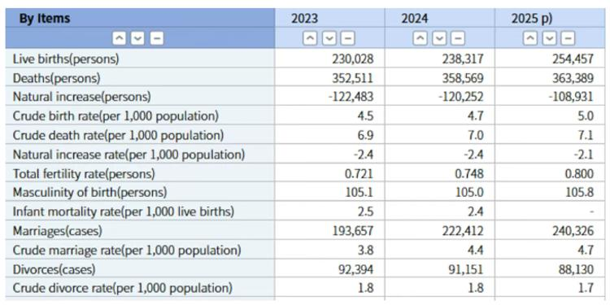
一句话核心：长期被当成"低生育反面教材"的韩国，生育率正在回升；而中国已有 11 个省份的出生率比韩国还低——风向在变。
图片解读：图为韩国统计厅数据表（2023/2024/2025 预估）：
- 活产数（Live births）：2023 年 23.0 万 → 2024 年 23.8 万 → 2025 年 25.4 万，连续两年回升。
- 粗出生率（Crude birth rate，‰）：4.5 → 4.7 → 5.0，逐年上升。
- 总和生育率（Total fertility rate）：0.721 → 0.748 → 0.800，触底反弹。
- 结婚数也在回升（19.4 万 → 22.2 万 → 24.0 万），这往往领先于出生数。
关键概念
- 出生率（‰）vs 总和生育率：出生率是"每千人里新生儿数"；总和生育率是"一个女性一生平均生几个孩子"（2.1 才能维持人口不减）。韩国 0.8 仍是全球最低之一，但方向上在改善。
为什么重要：这条颠覆了"东亚生育率只跌不回"的固有印象。韩国结婚和出生回升，可能与政策刺激、疫情后补偿性婚育有关。对中国的提示是：如果中国不能扭转，可能在"低生育"这条赛道上反超韩国垫底，进而加速老龄化、拖累长期增长——这正好呼应帖 3 的全球人口主题。
延伸知识：生育有"领先指标"——结婚数。东亚生育几乎都发生在婚内，所以结婚登记数往往提前 1 年预示出生数。想预判一国人口趋势，先看结婚曲线，比看出生数更早。
帖 10 ｜ 14:45 ｜ 中金：如何区分"好拥挤"与"坏拥挤" #股市
帖子原文
中金：中国市场内部，科技创下新高，而消费却跌回"924"之前。高拥挤并不一定意味着行情的尾声，在高拥挤期，正确的应对不是清仓，而是控制仓位，并增加尾部风险的对冲。真正决定我们是否需要继续暴露在拥挤动量带来的收益机会中的，是拥挤背后的支撑条件是否改变。 如何区分"好拥挤"和"坏拥挤"？……拥挤度并非简单的反转信号，而是脆弱性指标，它衡量的是因为持仓与交易的同质性不断积累流动性压力最后造成价格冲击的强度……我们更系统地将拥挤度质量的判断落地为四个可观测的维度：市场微观流动性，宏观流动性，基本面信用景气度以及叙事兑现程度。综合上述四个维度，我们判断当前高拥挤资产基本属于"好拥挤"。
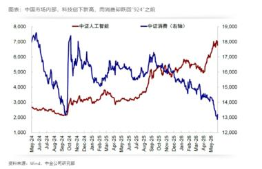
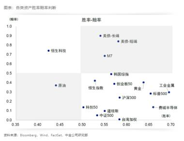
一句话核心：科技股很"拥挤"（大家都在买），但中金认为这是"好拥挤"，不必清仓，控仓+对冲即可。
图片解读
- 图一：中证人工智能指数（蓝）一路创新高（从约 2000 升到 7000+），而中证消费（红，右轴）却跌回"924 行情"之前的低位。资金极度集中在科技、抛弃消费——这就是"拥挤"的画面。
- 图二（各类资产胜率—赔率散点图）：横轴胜率、纵轴赔率（potential 收益/风险比）。可读出几类资产的性价比：美债长端/短端在右上角（高胜率、高赔率，最优）；恒生科技赔率高但胜率中等；标普 500、费城半导体胜率高但赔率偏低（涨过头了，性价比下降）；原油胜率最低。这是一张帮你"在不同资产间排性价比"的地图。
关键概念
- 拥挤度（crowding）：太多资金、太相似的仓位挤在同一交易上。中金的洞见是：拥挤本身不是卖出信号，而是"脆弱性指标"——一旦有风吹草动，大家同时夺门而出，价格冲击会被放大。
- 胜率 vs 赔率：胜率=赢的概率；赔率=赢了能赚多少 / 输了亏多少。好的投资追求"高赔率"，而不只是"高胜率"。
为什么重要：这提供了一个比"涨多了就跑"更成熟的框架。判断该不该继续持有拥挤的科技股，要看四个支撑是否还在：微观流动性、宏观流动性、基本面景气、叙事是否兑现。只要支撑没坏，拥挤可以是趋势强化而非反转。
延伸知识：拥挤交易的经典反面教材是 2007 年"量化地震"和 2021 年抱团股瓦解——当所有人用同一套因子/逻辑下注，去杠杆时会互相踩踏。所以专业机构不靠"猜顶"，而靠"控制仓位 + 买尾部对冲（如看跌期权）"来在拥挤行情里"且战且退"。
帖 11 ｜ 14:41 ｜ 办公楼挂牌价持续阴跌 #经济数据
帖子原文
国信达：5 月份，全国办公出售挂牌价指数环比上涨 0.13%，同比下降 6.85%。办公出租挂牌价指数环比下降 0.38%，同比下降 2.08%。
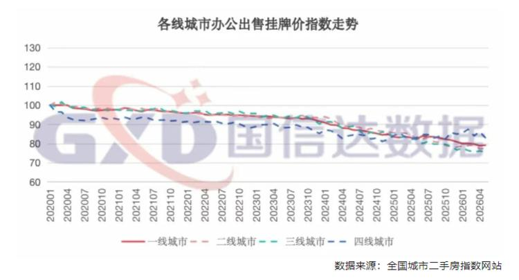
一句话核心：写字楼的卖价同比仍在跌（−6.85%），租金也在跌，商业地产仍未止跌。
图片解读：图为"各线城市办公出售挂牌价指数走势"，以 2020 年 1 月 = 100 为基期。四条线（一/二/三/四线城市）从 100 一路下行，到 2026 年 4 月普遍落到 78–85 区间，其中一线城市（红实线）跌得最多，跌到约 78–80。也就是说六年间办公楼挂牌价缩水约 15%–22%，且仍在阴跌通道里。
关键概念
- 挂牌价 vs 成交价：挂牌价是卖方"开价"，通常比真实成交价更乐观（成交往往要再打折）。所以挂牌价都跌成这样，实际成交可能更弱。
- 环比 vs 同比：环比看"比上个月"，反映短期动能；同比看"比去年同月"，反映趋势。这里环比微涨但同比大跌，说明短期略稳、长期仍在下行。
为什么重要：办公楼是商业地产的核心，与企业扩张意愿、就业、银行抵押贷款质量直接挂钩。价格持续下跌意味着：企业不扩张（要租办公室的需求弱）、持有物业的企业/机构资产缩水、银行的商业地产抵押品贬值——和帖 12（银行净息差）、帖 7（就业）相互印证，都是"内需弱"的不同侧面。
延伸知识：商业地产（尤其写字楼）是全球性难题。远程办公普及 + 经济放缓，让美国、欧洲、中国的写字楼空置率都在上升，被称为银行体系的"慢性风险"。这类资产流动性差、重估慢，风险往往是"温水煮青蛙"式释放。
帖 12 ｜ 14:39 ｜ 财新：银行业利润增速放缓的背后 #金融
帖子原文
财新：中国银行业利润增速放缓背后
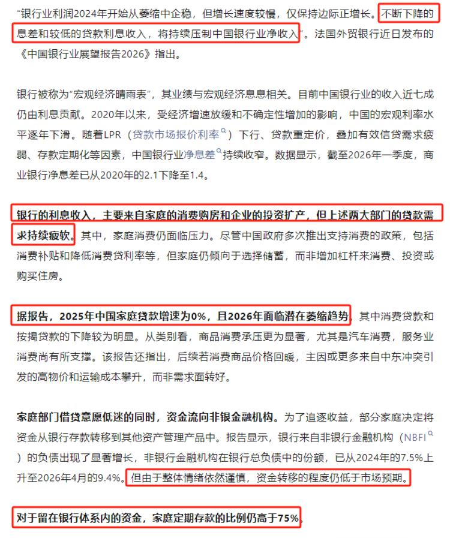
一句话核心：银行越来越难赚钱——息差被压到历史低位，贷款没人借，钱都趴在定期存款里。
图片解读：文章截图的关键数据——
- 净息差：从 2020 年的 2.1% 一路压到 2026 年一季度的 1.4%。这是银行"存贷利差"这个主要饭碗在变薄。
- 家庭贷款：2025 年增速为 0%，2026 年面临"潜在萎缩"。消费贷、按揭都在降。
- 资金流向非银（NBFI）：非银金融机构在银行总负债中的份额从 2024 年的 7.5% 升到 2026 年 4 月的 9.4%——居民在把存款搬去理财等产品追逐收益。
- 但留在银行体系内的资金里，家庭定期存款占比仍高于 75%——大家宁可锁定期存款也不消费、不买房。
关键概念
- 净息差（NIM）：银行（贷款利率 − 存款利率）的差，是银行最核心的盈利来源。息差收窄 = 银行利润承压。
- 存款定期化：居民把活期搬成定期，反映对未来悲观、预防性储蓄上升——这正是"消费意愿弱"的财务体现。
为什么重要：银行被称为"宏观经济晴雨表"，七成收入靠利息。息差跌到 1.4%、贷款零增长，说明实体经济的融资需求极度疲弱（企业不投资、居民不加杠杆）。银行利润薄了，又会影响它支持实体、补充资本、分红的能力，形成负反馈。
延伸知识：这是典型的"资产负债表衰退"症候——居民和企业的首要目标从"赚钱/扩张"变成"还债/存钱"，无论利率降到多低都不借钱消费投资。辜朝明用这个概念解释日本失去的二十年。破解之道通常需要政府加杠杆（财政发力）来对冲私人部门的收缩。
帖 13 ｜ 14:34 ｜ 高盛：家电内需仍弱，618 不振 #经济数据
帖子原文
高盛：中国家电内需仍然很弱，618 初步销售数据并不令人鼓舞，即使市场预期本来已经不高。我们观察到部分品牌在 618 期间降价，价格甚至低于 2025 年双 11。这说明在原材料成本上升的情况下，品牌仍然选择促销降价，说明终端需求压力比较大。这对利润率不是好信号。我们预计，6 月初国内需求仍会受到高基数压力影响；但到 6 月下旬和 7 月，基数压力可能逐步缓解，因为去年以旧换新的拉动从 6 月开始逐渐减弱。
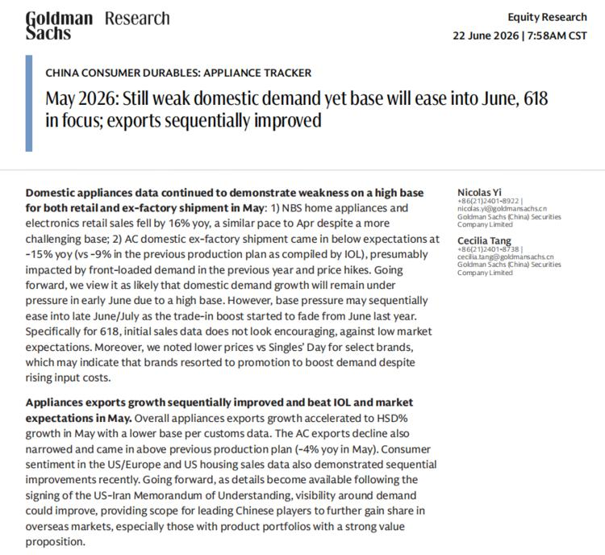
一句话核心：618 大促家电卖得不好，品牌只能降价保量，反映内需疲弱、利润承压。
图片解读：图为高盛研究报告（China Consumer Durables: Appliance Tracker，2026 年 6 月 22 日）。要点：5 月家电及电子零售额同比 −16%；空调出厂出货同比约 −15%，低于预期；618 初步销售"不鼓舞人心"；部分品牌价格甚至低于 2025 年双 11。但出口环比改善（增速加快），并提到美伊谅解备忘录签署后海外能见度可能改善——正好与帖 8（美伊缓和）联动。
关键概念
- 高基数效应（high base）：去年同期数字太高（因为去年有"以旧换新"补贴拉了一波需求），今年同比就显得难看。所以高盛说 6 月下旬起"基数压力缓解"——不是需求变好，而是去年的对比基准降下来了。
- 降价 + 成本上升 = 利润双杀：原材料涨价本该提价，品牌却被迫降价促销，说明需求弱到企业宁愿牺牲利润换销量。
为什么重要：家电是观察居民"可选消费"的好窗口（不是必需品，景气差就先砍）。618 这种大促都拉不动，进一步坐实"内需弱"。利润率受压对家电板块股票是利空。
延伸知识：分析消费数据一定要做"基数调整"和"促销前置/透支"的判断。政府补贴（以旧换新）会把未来需求提前透支到当下，补贴退坡后就出现"需求真空"。看懂这一点，才不会被短期数据的好看/难看骗到。
帖 14 ｜ 14:22 ｜ 瑞银：银行开始暂停 2 年期定存 #金融
帖子原文
瑞银：部分国内商业银行已经从暂停 3 年期、5 年期定存，扩展到暂停 2 年期定存。原因包括：银行净息差收窄；信贷需求疲弱；互联网贷款监管趋严；银行不愿锁定较高长期负债成本。还出现了利率倒挂，5 年期存款利率低于 3 年期。说明银行预期长期利率还会继续下行，不愿意用高成本吸收长期存款。
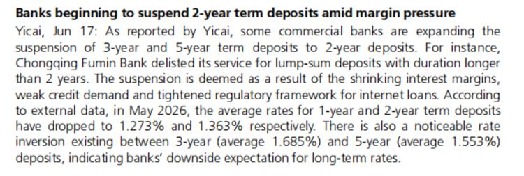
一句话核心：银行主动"赶客"——不让你存长期定存了，因为它们预期利率还要降，不想现在锁定高成本负债。
图片解读：图为 Yicai（第一财经）6 月 17 日报道：部分商业银行（如重庆富民银行）下架 2 年期以上大额存款；2026 年 5 月 1 年期、2 年期定存平均利率已降到 1.273%、1.363%；并出现 3 年期（1.685%）高于 5 年期（1.553%）的利率倒挂。
关键概念
- 银行为何不要你的长期存款：存款是银行的"负债（成本）"。如果银行判断未来利率会继续下行，现在用较高利率锁定 5 年存款，就等于背上 5 年的高成本，而它放出去的贷款利率却越来越低——息差被两头挤。所以宁可拒收。
- 存款利率倒挂（5 年 < 3 年）：正常情况下存得越久利率越高。倒挂说明银行预期长期利率会更低，不愿为长期资金多付钱。这是市场对"长期低利率/通缩"的定价。
为什么重要：这是帖 12（净息差 1.4%）的"行为层面"印证——银行用实际动作（拒收长期存款、压低长端利率）表达对未来的悲观。对储户意味着"躺着吃利息"的时代结束，理财收益越来越低，会逼着资金去找别的出路（呼应帖 12 的"资金流向非银"）。
延伸知识：这其实是"利率市场化 + 低利率时代"的必然。当一个经济体走向低增长，无风险利率（存款、国债）会被一路压低（日本、欧洲都到过零甚至负利率）。储户的"安全收益"消失，会推动财富向风险资产（股、债、海外资产）再配置——这是未来几年中国家庭资产配置的大命题。
帖 15 ｜ 13:22 ｜ 八卦：半夏重仓地产链，净值一周跌 15% #八卦
帖子原文
曹山石：半夏重仓地产链，净值一周跌 15%
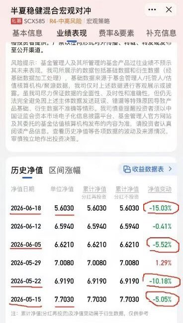
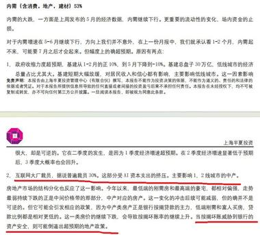
一句话核心：知名私募半夏（李蓓）因为重仓押注地产链，单周净值暴跌 15%，成了风险案例。
图片解读：图为"半夏稳健混合宏观对冲"基金的历史净值表（产品风险等级 R4-中高风险）。可以看到连续几周的大幅回撤：
| 净值日期 | 单位净值 | 周净值变动 |
|---|---|---|
| 2026-06-18 | 5.6030 | −15.03% |
| 2026-06-05 | 6.2210 | −5.52% |
| 2026-05-29 | 7.0080 | +1.29% |
| 2026-05-22 | 6.9190 | −10.18% |
| 2026-05-15 | 7.7030 | −5.05% |
从 5 月中的 7.70 一路跌到 6 月中的 5.60，一个多月缩水约 27%——评论区有人说"一个月跌掉 30%"。
为什么重要：这是一个生动的"集中押注+宏观对冲翻车"案例。半夏是国内知名的宏观对冲私募，重仓地产链（押地产/相关板块反转）却踩在了持续下行的趋势上（呼应帖 11 办公地产、帖 12/14 银行——整个地产金融链条都弱）。它提醒：再聪明的机构，单一方向重仓 + 趋势判断错，回撤也可以非常惨烈。
延伸知识：这正好和帖 10（中金拥挤度）形成镜像——半夏的教训说明"控制仓位 + 尾部对冲"为什么重要。宏观对冲基金本应通过多空对冲降低波动，但如果"对冲"变成了"方向性重仓 + 杠杆"，风险敞口反而更大。对普通投资者的启示：看一只基金不能只看历史高收益，要看它的回撤幅度和风险等级（这只是 R4 中高风险），并理解自己能否承受这种波动。
今日全图索引
| 帖号 | 时间 | 主题 | 标签 | 图片文件 |
|---|---|---|---|---|
| 1 | 15:53 | 美银：2026 加息三次预期 | #金融 | post1_img1.jpg |
| 2 | 15:47 | Westpac：澳新利差与新西兰元 | #金融 | post2_img1.jpg |
| 3 | 15:45 | 全球人口结构拐点（除非洲） | #人口 | post3_img1.jpg, post3_img2.jpg |
| 4 | 15:37 | 美银投资时钟：繁荣→滞胀风险 | #金融 | post4_img1.jpg |
| 5 | 15:29 | 欧央行：货币谈判须含中国 | #金融 | post5_img1.jpg |
| 6 | 15:23 | 稀土供应链"武器化"管制名单 | （无） | post6_img1.jpg |
| 7 | 15:18 | 自制图表：青年失业率走高 | #自制图表 | post7_img1.jpg, post7_img2.jpg |
| 8 | 15:16 | 美国给伊朗 60 天石油销售许可 | #金融 | post8_img1.jpg ~ post8_img6.jpg |
| 9 | 15:10 | 中韩生育率逆转 | #人口 | post9_img1.jpg |
| 10 | 14:45 | 中金：好拥挤 vs 坏拥挤 | #股市 | post10_img1.jpg, post10_img2.jpg |
| 11 | 14:41 | 办公楼挂牌价持续下跌 | #经济数据 | post11_img1.jpg |
| 12 | 14:39 | 财新：银行净息差降至 1.4% | #金融 | post12_img1.jpg |
| 13 | 14:34 | 高盛：家电内需弱、618 不振 | #经济数据 | post13_img1.jpg |
| 14 | 14:22 | 瑞银：银行暂停 2 年期定存 | #金融 | post14_img1.jpg |
| 15 | 13:22 | 八卦：半夏净值一周跌 15% | #八卦 | post15_img1.jpg, post15_img2.jpg |
本报告由自动化任务生成，内容基于 Jason 不跪当日公开发帖整理与解读，仅供学习参考，不构成任何投资建议。